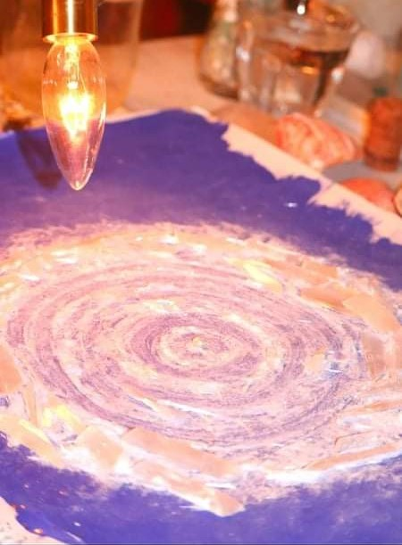
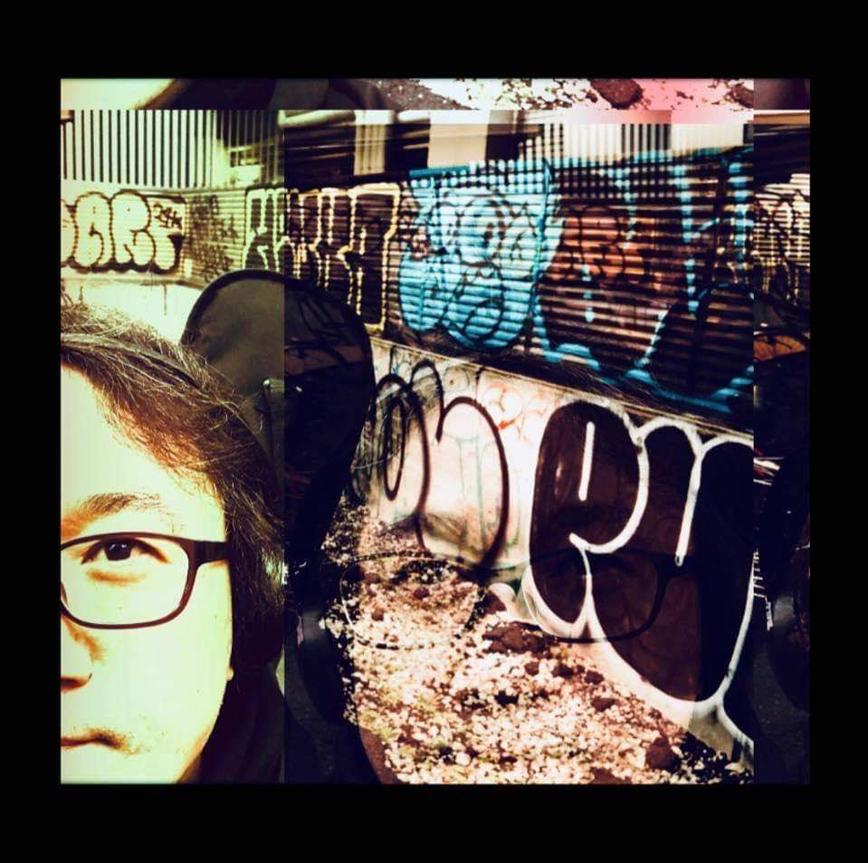
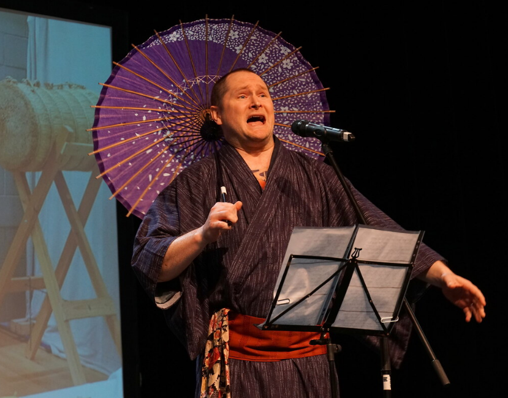
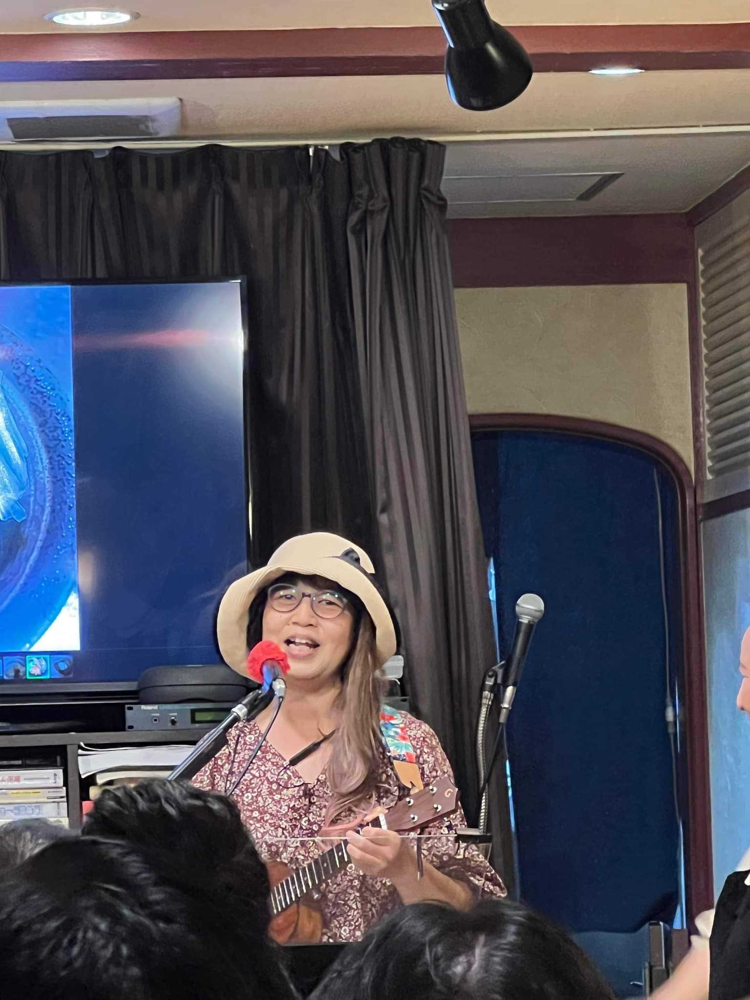
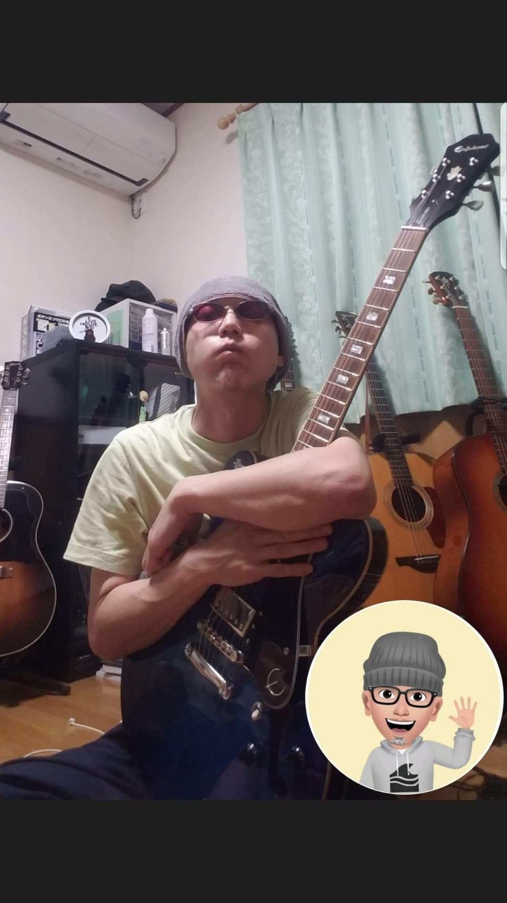
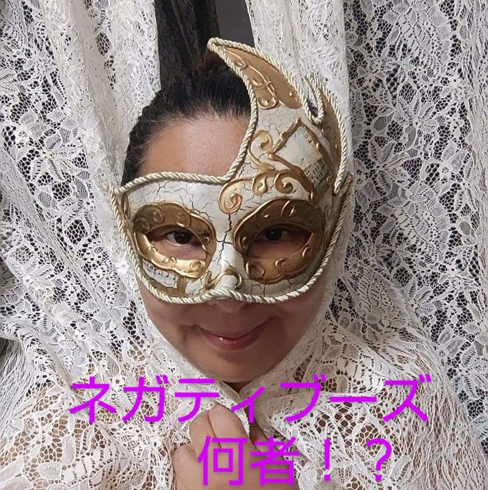
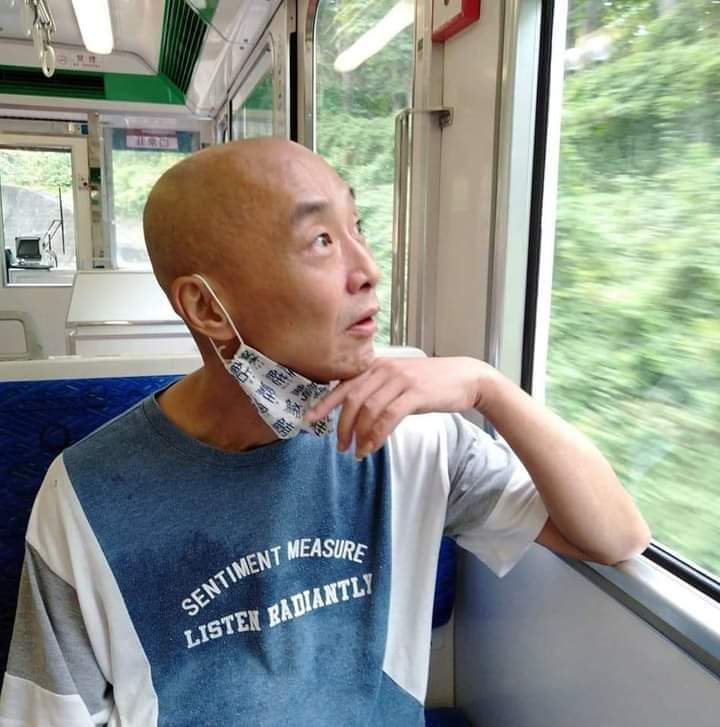

collaboration


- 
- 

- 
- 

- 
- 
- 
artist
- POTEMKINGARAGE
- KAMURA
- みいゆMiiyu
- enriko
- bob
- Tyson Blake
- Marty Arrow
- Andy Balcam
- James Asaka
- Vai Hideki
- Lua
- HAYATO
- Takashi Maruta
- SUSHILADIES♥
- Hiroshi Yoshimura
- Katsumi Kinoshita
- DJ Toshy N
- RIKO
- Akihisa Tsukamoto
- TERRY335
- 若草屋北斎
- 🎤yasuko🎤
- 瀬林ジェーン
- リブラ
- 団地少年28号 Danchisyonen 28th
- 北沢章
- L.J English
- いけもっちゃん（まみーちゃん）
- Go maru
- タムランチ
- ネガティブーズ★
- 錦織裕之
POTEMKINGAREGE
山梨
Yamanashi
独特な哲学的表現、アートな映像、スキルフルなアコースティックギター演奏で人々を魅了する奇才。 SUSHIROCKが初めてコラボしたアーティスト。業界経験は彼が先輩のはずなのに、なぜか、SUSHIROCKのことをアニキと呼ぶ。
A genius who fascinates people with his unique philosophical expression, artistic images, and skillful acoustic guitar playing. The artist that SUSHIROCK collaborated with for the first time. He should be a senior in the industry, but for some reason, SUSHIROCK is called ”Aniki”.
SUSHIROCKとのコラボ作品
「Craftsman」「ミルクの無い朝食 -LAL.style-」
KAMURA
沖縄
Okinawa
SUSHIROCKとS/K UNLIMITEDのユニットを組む、沖縄のコンポーザー兼ギタリスト。 幅広いジャンルの音楽に精通し、SUSHIROCKにはない世界観を繰り広げる。 歌ものだけでなく、彼のギターインストにも注目。
An Okinawan composer and guitarist who forms a unit with SUSHIROCK named "S/K UNLIMITED". Familiar with a wide range of genres of music, he develops a world view not found in SUSHIROCK. Pay attention not only to the songs but also to his guitar instrument
SUSHIROCKとのコラボ作品
S/K UNLIMITED作品多数 「秋の宿題」「taboo -Version S/R-」
みいゆMiiyu
岩手
iwate
東北を代表する美しきシンガーソングライター。アコギやギタレレ片手に誰もが幸せな気分になるオリジナル楽曲を配信。 Youtube等でオンラインライブを定期的に開催しており、その楽しいライブにも定評がある。 SUSHIROCKの楽曲カバーにも前向きにご協力いただいている。
A beautiful singer-songwriter representing Tohoku area. Delivering original songs that make everyone happy with an acoustic guitar or guitalele in one hand. Online live concerts are held regularly on Youtube, etc., and the fun live concerts have a good reputation. She always cooperates with SUSHIROCK's music cover positively.
SUSHIROCKとのコラボ作品
「カケヒキ」「I hate you -tribute Miiyu-」
enriko
福島県出身。宮城県在住
Fukushima Miyagi
普段は主婦しながらママさんアマチュアシンガーソングライターとして活動する傍ら、仕事は介護福祉士として勤務、通信大学にて心理学、他に音楽療法も勉強中。 パワフルな歌唱と、華麗なるピアノ演奏が彼女の武器であり、SUSHIROCKとも複数の共作を行う。 オリジナル業界のムードメーカー。
While working as a mama's amateur singer-songwriter while being a housewife, she works as a long-term care welfare worker, studying psychology at a correspondence university, and also studying music therapy. Her weapons are powerful singing and splendid piano performance, and she has collaborated with SUSHIROCK on multiple occasions. The mood maker of the original industry.
SUSHIROCKとのコラボ作品
「move on to a new path」「FUTARI〜故郷と風と〜(LAL4)」 「アナタへの未練」
bob
博多
Hakata
博多金太郎ギターで、Amを中心にオリジナル曲を歌う「愛の伝道師」。彼の常識破りギタープレイとセクシーな歌声が奏でるラブソングは、老若男女問わず人々を魅了する。その独特な作詞センスをリスペクトし、SUSHIROCKは作詞をお願いすることがある。
"Evangelist Of Love" who sings original songs centered on Am on Hakata Kintaro guitar. His unconventional guitar play and sexy singing voice make love songs unfinished for men and women of all ages. Respecting that unique songwriting sense, SUSHIROCK may ask you to write the lyrics.
SUSHIROCKとのコラボ作品
「音楽戦隊ミュージマン♪」
Tyson Blake
Illinois.America
先進的で芸術的な音楽を生み出すアメリカのミュージシャン。ギター、ベース、DTM等と様々なプレイやアプローチを行う。 SUSHIROCKの音楽を気に入ってくれたことから親交が始まり、時に共作を行う。 また、SUSHIROCKの主催するオンライン英会話の協力者でもある。
An American musician who produces advanced and artistic music. Performs various plays and approaches with guitar, bass, DTM, etc. The friendship started because he liked SUSHIROCK's music, and sometimes he co-wrote. He is also a collaborator of online English conversation sponsored by SUSHIROCK.
SUSHIROCKとのコラボ作品
「What's going on？」
Marty Arrow
Poland
ポーランド出身のギタリストであり、ロックからフュージョン等、様々なオリジナルインストを配信している。 SUSHIROCKがたまたまそのプレイを目にし、その美しいトーンとセクシーなプレイに魅了され、オファーしたことから共作が実現。
A guitarist from Poland, he distributes various original instruments such as rock and fusion. SUSHIROCK happened to see the play, was fascinated by its beautiful tone and sexy play, and offered it, so the collaboration was realized.
SUSHIROCKとのコラボ作品
「Summer Syndrome」
Andy Balcam
England
大英帝国が誇るザ・ロックギタリスト。 古き良きロックなギタープレイと、そのプレイスタイルのHotさに魅了されたSUSHIROCKからのオファーにより、 共作が実現。彼が率いるバンドプロジェクト「VanZaalRocks」にも注目。
He is proud of Britain's glourious musical legacy. Co-production is realized by the offer from SUSHIROCK, who was fascinated by the good tradiconal rock guitar play and the hotness of the play style. The guitar on which a woman is printed is also Cool.
SUSHIROCKとのコラボ作品
「Masurao Man」「Nothing but Rock'nRoll -Ver.UK-」
James Asaka
渋谷
Shibuya
聖飢魔Ⅱのダミアン浜田氏を敬愛するHRHMギタリスト。しかし、繊細なバラードからポップスまで多彩なギタープレイに対応し、様々なジャンルのオリジナル音楽を生み出す。 コラボの際は、原曲の魅力を何倍も輝かせるプレイやアレンジを行う。
An HRHM guitarist who admires Damian Hamada of Seikima II. However, it supports a variety of guitar play from delicate ballads to pop music, and produces original music of various genres. When collaborating, we will play and arrange to make the charm of the original song shine many times.
SUSHIROCKとのコラボ作品
「ファイナル・ハピネス2021」「天下泰平」
Vai Hideki
埼玉
Saitama
名ギタリストスティーブ・ヴァイを愛するロックギタリスト。そのHotなギタープレイは一度観た者の心に強い印象を与える。圧倒的なギターテクニックと、アマチュア音楽界の賢者として、SUSHIROCKとのコラボを支える。
Rock guitarist who loves the famous guitarist Steve Vai. The hot guitar play impresses the hearts of those who have seen it once. With overwhelming guitar technique, he supports collaboration with SUSHIROCK as a wise man in the amateur music world.
SUSHIROCKとのコラボ作品
「Go!Go! ～華麗なる瞬間～ 2021」
Lua
宮崎
Miyazaki
その個性的でセクシーな声と歌唱力で多くの人々を魅了する女性シンガーソングライター。POTEMKINGAREGEの清水氏とのユニット「ルアムキン」としての活動も行い、「魚影」は第2回ネオコンテストで銅賞を受賞。
A female singer-songwriter who fascinates many people with her unique and sexy voice and singing ability. He also worked as a unit "Luamkin" with Mr. Shimizu of POTEMKINGAREGE, and "Uokage" won the bronze prize at the 2nd Neo Contest.
SUSHIROCKとのコラボ作品
「維新伝 -HOPE OF ZIPANG-」
HAYATO
高知、四万十市出身 大阪在住
Shimanto.Kouchi Osaka
普段はエレベーター据付けを行う「ガテン系」ギタリスト。そのプレイは布袋〇泰や、松本〇弘といったジャパニーズギタリズムの正当継承を感じる。 そのサウンドとプレイはとにかく「カッコいい」以外の表現が見つからない。
A "gatten" guitarist who usually installs elevators. The play feels the legitimate inheritance of Japanese guitarism such as Hotei Tomoyasu and Matsumoto Tomoyasu. Anyway, I can't find any expression other than "cool" for the sound and play.
SUSHIROCKとのコラボ作品
「アナタへの未練」
Takashi Maruta
日本
Japan
世界を相手に圧倒的なテクニックで活躍するギタリスト。Speedmetal,HeavyMetal ,progressiverock,neoclassical ,HardRock等幅広いジャンルのオリジナル楽曲の配信を行う。SUSHIROCKには音楽活動における様々な助言を与える。
A guitarist who plays an active part in overwhelming technique against the world. Distributes original songs of a wide range of genres such as Speedmetal, Heavy Metal, progressive rock, neoclassical, and Hard Rock. Give SUSHIROCK various advice in music activities.
SUSHIROCKとのコラボ作品
「TELL ME THE WAY」
SUSHILADIES♥
埼玉
Saitama
SUSHIROCKの映像作品を華やかに、時に艶やかに彩る淑女達。 永遠の20代を体現するその姿は多くの女性、そして男性に夢と希望を与える。 SUSHIROCKを音楽面だけでなく、彼が主催するオンライン英会話においても支える。
Ladies who brightly and sometimes sexily color SUSHIROCK's video works. Its appearance, which embodies the eternal twenties, gives dreams and hope to many women and men. Supporting SUSHIROCK not only in music but also in online English conversation hosted by him.
SUSHIROCKとのコラボ作品
「Go!Go! ～華麗なる瞬間～ 2021」 「Summer Syndrome」
Hiroshi Yoshimura
東京
Tokyo
東京都江東区生まれのシンガーソングライター。
その圧倒的な楽曲クオリティおよび男も涙する歌唱力で、数々の名曲を世に産み出す。
マニュピレーター、レコーディングエンジニアとしての活動を経て、今に至る。
『自分を含む全ての弱き者達』へ向け、創作活動を続ける。
【HIROSHI YOSHIMURA DISCOGRAPHY】
・【PRIME TRAX Vol.3】 / label：HiBOOM（avex Group）・・・『Flower Garden』、『風と共に』 収録
・【PRIME TRAX Vol.5】 / label：HiBOOM（avex Group）・・・『Much More』 収録
・【D.C.2003-MONTAGE-】 / label：Daddy's Cafe・・・『Brother』、『Stranger』 収録
A singer-songwriter born in Koto-ku, Tokyo. With its overwhelming music quality and singing ability that even men tear, it produces many famous songs in the world. After working as a manipulator and recording engineer, he continues to this day. Continue creative activities toward "all the weak people including myself".
SUSHIROCKとのコラボ作品
「Shadow Dance」
Katsumi Kinoshita
愛知
Aichi
アルゼンチンタンゴというダンスを極め、他のさまざまなダンスも経験しているうち、 フラダンスの先生から勧められウクレレと巡り合う。 「ステップをとめて」というYOUTUBEチャンネルにて楽曲を配信し、SUSHIROCKからのオファーにより、『うまロック』の歌を作成。 「奏法も歌も、Hawaiianを教わりました。Hawaiianは、コードもKeyもシンプルですが、 多用されるファルセットと、実際には圧倒的な声量で歌ってゆきます。 そして、歌詞にはカオナといって裏の意味があります。 曲を書くことを、必要以上にむずかしく考えておられるかたは非常に多いので、 誤解をとくため、お気楽な曲をたくさん書いています♪」
While mastering the dance of Argentine tango and experiencing various other dances, Recommended by a hula teacher, he meets the ukulele. The song was distributed on the YOUTUBE channel "Step wo Tomete", and the song "Uma Rock" was created by an offer from SUSHIROCK. "I learned Hawaiian in both playing and singing. Hawaiian has simple chords and keys, but I will sing with the falsetto that is often used and the overwhelming voice volume. And the lyrics have the back meaning of Kaona. There are so many people who think that writing a song is more difficult than necessary, so To avoid misunderstanding, I write a lot of easy songs ♪
SUSHIROCKとのコラボ作品
「うまろっく」
DJ Toshy N
東京
Tokyo
看護師として介護施設で働くかたわら、シンセサイザー3台と電子ピアノなどで、独自の世界観の楽曲を創作する。ジャンルはアンビエントやダンス系、ジャズ系、変わった歌ものや実験音楽など。DJとしてのスキルを持ち、Mixcloud のトランスなどのチャートで上位に行くこともある。enrikoさんとSushirock とのコラボ作"Move On To A New Path" のリミックスにて共演。
While working as a nurse in a long-term care facility, he creates songs with a unique world view using three synthesizers and an electronic piano. Genres include ambient, dance, jazz, unusual songs and experimental music. He has DJ skills and sometimes goes to the top of charts such as Mixcloud's trance. Co-starred in a remix of "Move On To A New Path", a collaboration between Enriko and Sushirock.
SUSHIROCKとのコラボ作品
「move on to a new path -feat.enriko- ★DJ Toshy N Remix★」
RIKO
北九州
Kitakyusyu
北九州の作詞家。 Z〇RDを敬愛し、高校生の頃に自分の気持ちや思いついた言葉を文章にしたところ、 友人に賞賛されたことをきっかけに作詞を始める。 作詞において重視されているのは、「自分の思っていることを素直に表現する」「あまり英語を使わずわかりやすい日本語で表現すること」 そして、その歌詞が誰かの励みになったり、何かのきかっけとなればと考え、作詞を行う。 アルバム作成を取り組まれれており、SUSHIROCKも楽曲提供を行う。
A lyricist in Kitakyushu in Japan. I admired Z ○ RD and wrote down my feelings and words that came to my mind when I was in high school. Started writing lyrics after being praised by a friend. The emphasis in writing lyrics is "to express what you think honestly" and "to express in easy-to-understand Japanese without using much English". Then, I write the lyrics, hoping that the lyrics will encourage someone or trigger something. The album is being created, and SUSHIROCK will also provide music.
SUSHIROCKとのコラボ作品
「SNOW」
Akihisa Tsukamoto
日本
japan
オリジナル界を代表する作詞家。10代の頃から宅録を始め、手作りの音楽を好む。 作詞に留まらず、ベース ギター 作曲も行う。 かつては、国内 海外を転々として音楽を学ぶ。 2020年、stayhomeと共に本格的にオリジナル音楽の配信を始め、SUSHIROCKとはほぼ同期。 好きな言葉は「猫まっしぐら」
A lyricist who represents the original world. He started home recording when he was a teenager and likes handmade music. In addition to writing lyrics, he also composes bass guitar. In the past, he studied music from home to abroad. In 2020, we started distributing original music in earnest with stayhome, almost in sync with SUSHIROCK. My favorite word is "cat straight"
SUSHIROCKとのコラボ作品
「森の奥へ出かけよう」
TERRY335
東京
Tokyo
ビートルズで音楽に目覚め、中学校の謝恩会で初めてステージに立ち、フュージョンバンドでギターを担当、その後歌ものバンドを結成しギターボーカル。カセットMTRでオリジナル曲を作り始める。その後25年ほどのブランクを経て復活創作活動続けている。 そのCoolなギタープレイ魅了されたSUSHIROCKからのオファーにより、共作を行う。
Awakened to music at The Beatles, stood on stage for the first time at a junior high school thank-you party, was in charge of guitar in a fusion band, and then formed a singing band and became a guitar vocalist. Start making original songs with cassette MTR. After a blank of about 25 years, he continues his revival creative activities. The cool guitar play is co-produced by the offer from fascinated SUSHIROCK.
SUSHIROCKとのコラボ作品
「いつかの踊り子 ★feat.TERRY335★」
若草屋北斎
福島県会津若松市
FUKUSHIMA
介護職の傍ら、DTMにて、Rockかつ人間の内面と向き合った楽曲制作を行う。また、福島をフィーチャーしたその映像も個性のひとつ。SUSHIROCKに音楽サブスクリプション配信のきかっけを与えた重要人物。
Beside long-term care work, he creates music at DTM that is rock and faces the inside of human beings. Also, the video featuring Fukushima is one of the personalities. An important person who gave SUSHIROCK a chance to distribute music subscriptions.
SUSHIROCKとのコラボ作品
「運命の神秘 ★tribute.若草屋北斎★」
🎤yasuko🎤
日本
Japan
大阪で日本舞踊やギター、DTM、ダンス、ボイトレなどのレッスンを行うカルチャースクール「カインドアイランド」のCEO。ボイストレーナー、シンガー、MC、役者として活躍中。
2022年9月より配信アプリ「ポコチャ」にてライバーデビュー。生放送にて1日3～4時間ほどリスナーのリクエストに応える形で生歌を配信中！
yasukoの生歌を聴きたい人は、ポコチャで「やすこ」を検索＆要チェック☝️
■ポコチャ
https://www.pococha.com/app/users/94492a66-9421-4188-94a8-ebe7a4b12d49
CEO of "Kind Island", a culture school that offers lessons in Japanese dance, guitar, DTM, dance, voice training, etc. in Osaka. Active as a voice trainer, singer, MC, and actor.
From September 2022, he will make his live debut on the distribution app “Pokocha”. We are delivering live songs in response to listener requests for about 3 to 4 hours a day on live broadcasts!
If you want to listen to yasuko's live song, search for "Yasuko" on Pococha and check it out☝️
■ Pococha
https://www.pococha.com/app/users/94492a66-9421-4188-94a8-ebe7a4b12d49
SUSHIROCKとのコラボ作品
「少年 -feat.🎤yasuko🎤- ★連続スシロ小説🌄★ ／ SUSHIROCK studio」
瀬林ジェーン
日本
Japan
Sushi Rock Studioにてナレーター、メイクアップアーティストとして活動中。その姿はベールに包まれている。
Active as a narrator and makeup artist at Sushi Rock Studio. Its figure is wrapped in a veil.
SUSHIROCKとのコラボ作品
「少年 -feat.🎤yasuko🎤- ★連続スシロ小説🌄★ ／ SUSHIROCK studio」
チャンネルURL
リブラ
栃木県 那須塩原石林～さくら
TOCHIGI-NASU
国境などない言葉は違っても
肌の色は違っても歌に国境などない
好きな色 好きな花 好きな場所
みんなの愛を聞きたい
生息地 地球と地球に一番近い星の間
仕事は目に見えないバランスをとること
コトバのバランス ココロとカラダのバランス無意識のセカイのバランス
ネイタイルのホロスコープを詩にしています
拙い詩を感性豊かなアーティストの方々に楽曲にしていただいています
There are no borders, even if the words are different
Even if the skin color is different, songs have no borders
Favorite color Favorite flower Favorite place
I want to hear everyone's love
Habitat Between Earth and the closest star to Earth
The job is to find the invisible balance
The balance of words The balance of mind and body The balance of the unconscious world
Poetry of Natile's horoscope
We have artists with rich sensibilities turn our clumsy poems into songs.
At the foot of the mountains of Nasu, Nikko
SUSHIROCKとのコラボ作品
「YES 🌟／ リブラ🌠✖SUSHIROCK🍣」
チャンネルURL
団地少年28号 Danchisyonen 28th
東京都三多摩地区
TOKYO
完全オタク妄想幻覚ロック作ってます。YouTube絶滅公開中です。是非ご覧下さい。
I'm making a complete otaku delusion hallucination rock. YouTube extinction is open to the public. Please take a look.
SUSHIROCKとのコラボ作品
「天命 -with.団地少年28号- ★EARLY DAYS REMIX♪★／SUSHIROCK」
北沢章
東京
TOKYO
子供の頃夢みていたオリジナルの歌作り
今ようやくオリジナール🔔
コミュニティでたくさんの仲間と共に実現しています。
う、美しい・・・
Making an original song that I dreamed of when I was a child
Now finally "original"🔔
It is realized with many friends in the community.
wow beautiful...
SUSHIROCKとのコラボ作品
「D.I.O.S🌍 ★剛音神話スシロカイザーDios・テーマソング★／SUSHIROCK studio」
L.J English
イギリス
United Kingdom
日本人よりの日本の"演歌"そして"昭和歌謡"を愛する英国紳士（ジェントルマン）。2つの島国を結ぶ真なる架け橋。彼は日本の音楽をイギリスに英国に持ち込んだ。祭、そしてコンサートでその実力を発揮している。
English singer of Japanese enka and showa era kayoukyoku. A true bridge between two island nations, LJ English brings Japanese music to the UK. He is a popular addition to festivals and concerts.
SUSHIROCKとのコラボ作品
「兄弟の契り🍶 ★歌唱・L.J English🇬🇧&岡山勇次郎🌊★」
いけもっちゃん （まみーちゃん）
千葉
CHIBA
障害児デイサービスの保育士。 そして、勝手に千葉観光大使🥜として、千葉のアピールに余念がない。
A nursery teacher at a day service for disabled children. And as an ambassador for tourism in Chiba🥜, he has no choice but to appeal to Chiba.
SUSHIROCKとのコラボ作品
「セクシャルバイオレットNo.1 😘★feat.いけもっちゃん🥜★ tribute.桑名正博／ SUSHIROCK」
Go maru
奈良
NARA
卓越した歌唱力と独特な世界感を誇る奈良の女性シンガー。
趣味は、
・畑とガーデニング
・占星術
・音楽製作
UGとも『urban』『Unlimited Game』でコラボレーション。
A female singer from Nara who boasts outstanding singing ability and a unique sense of the world.
Hobby,
・Fields and gardening
·astrology
・Music production
Collaboration with UG on "Urban" and "Unlimited Game".
SUSHIROCKとのコラボ作品
「BEYOND🐇 ★Go Maru🎙❌Marty Arrow🎸❌SUSHIROCK🤘★」
タムランチ
長野県上田市
NAGANO
自宅の部屋で毎晩コツコツと活動しており、 噂によるとここ2年ほど毎日YouTubeにアップしてるらしい音楽おバカ。 ギター歴30年オーバーでこちらもほぼ毎日弾き続けているらしい。 特別好きなジャンルとかはなく好きなもんはなんでもやる。
Every night in his room at home, he works diligently, Rumor has it that he's been uploading music to YouTube every day for the last two years. He has been playing the guitar for over 30 years and seems to be playing it almost every day. I don't have a particular favorite genre, I do whatever I like.
SUSHIROCKとのコラボ作品
「｢♪HIGH! HIGH! HIGHWAY♪｣ SUSHIROCK&タムランチ★」
ネガティブーズ
ユーチューブ
youtube
ネガティブな感情からも生まれるものはある、ネガティブだけどポジティブになりたいという思いから、オリジナルソングを作詞作曲しギター弾き語りを行う仮面淑女。 その時歌いたいなと思う曲を自由にカバーし、自由気ままをモットーにユーチューブを主として活動中。
There are things that are born from negative emotions, and Masked Lady who writes and composes original songs and sings by playing the guitar because she wants to be positive even though she is negative. She freely covers songs that she wants to sing at that time, and mainly works on YouTube with the motto of freedom.
SUSHIROCKとのコラボ作品
「個性🎭 -LEVEL2- ★feat.ネガティブーズ★ ／ SUSHIROCK」
錦織裕之
東京、関東エリア
Tokyo Kanto erea
難病を抱えてみて…何をする時も、挑戦出来る事に感謝しつつ、主に音を紡いでおります。 出来無い事より、だから出来る事を。 Welcome to Hiro's playground. Sincerely heart lasts eternity.
Rather than what you can't do, do what you can. Welcome to Hiro's playground. Sincerely heart lasts eternity.
SUSHIROCKとのコラボ作品
「SUSHIROCK's イツカミテロヨ」